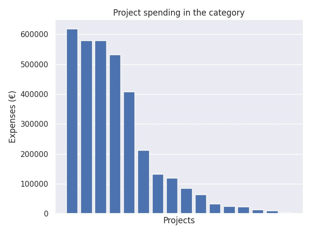

Valtionavustukset järjestöille 2018
Category summary
215K spent on average
618K highest spending

Reports in the category
Kansanvalistusseura sr
Project name: Etäkoulu Kulkuri ja Nomadskolan
618K spent
Suomi-Seura ry
Project name: Suomi-koulujen toiminta
579K spent
Suomen Vanhempainliitto ry, Finlands Föräldraförbund rf
Project name: Kodin ja kasvatusyhteisön yhteistyön kehittäminen varhaiskasvatuksessa ja koulussa / järjestöille myönnettävät avustukset
579K spent
Förbundet Hem och Skola
Project name: Allmänt verksamhetsbidrag
532K spent
Natur och Miljö rf
Project name: naturskolverksamhet på svenska år 2018
408K spent
Kesälukioseura ry
Project name: Kesälukiotoiminta
212K spent
Kehittämiskeskus Opinkirjo ry
Project name: Nuorten parlamentti ja Tutki-Kokeile-Kehitä-toiminta
132K spent
Matemaattisten aineiden opettajien liitto MAOL ry
Project name: Neljän tieteen kisat ja tiedeolympialaiset
119K spent
Suomen Ympäristökasvatuksen Seura ry (FEE Suomi)
Project name: Vihreä lippu -ympäristökasvatusohjelma
85.2K spent
Suomen lasten ja nuorten kuvataidekoulujen liitto
Project name: Taiteen perusopetuksen koulutus- ja tiedotustoiminta, pedagoginen ja muu kehittämistyö
64.3K spent
Biologian ja maantieteen opettajien liitto BMOL ry
Project name: Lukiolaisten kansalliset biologian ja maantieteen kilpailut sekä kansainvälinen olympiatoiminta
33.1K spent
Suomi-Saksan Yhdistysten Liitto ry
Project name: Oppilasvaihto Suomi-Saksa-Suomi
25.8K spent
Suomen Leirikouluyhdistys - Lägerskolföreningen i Finland ry
Project name: Ulos Luokasta! Leirikoululähettiläs
23.8K spent
Filosofian ja elämänkatsomustiedon opettajat Feto ry
Project name: IPO Filosofiaolympialaiset (International Philosophy Olympiad)
14.2K spent
AFS Intercultural Programs Finland ry
Project name: Nuorten kansainvälisyysosaamisen lisääminen
10K spent
Suomen Youth For Understanding r.y.
Project name: Suomalaisten vaihto-oppilaiden apurahat
4K spent